Self-engaging
Welcome to Zabbix API self engaging methods. All upcoming chapters will address the tools available to allow software to re-engage with itself. It is like developing a small service(s) which runs on the top of Zabbix and do exactly the tasks we told to do. This is like simulating an extra employee in the company.
API variables
To start to engage with Zabbix API:
Create a dedicated service user. Go to Users => Users, click Create user, set Username api, install Groups No access to the frontend, Under Permissions tab, assign user role Super admin role which will automatically give user type Super admin.
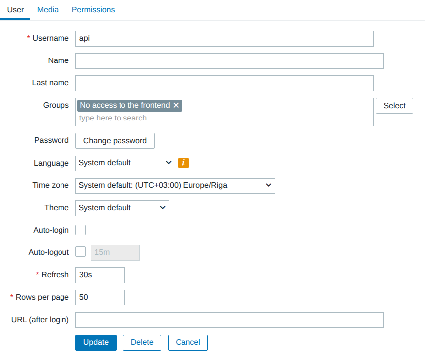
12.1 Create API user
Permissions tab:
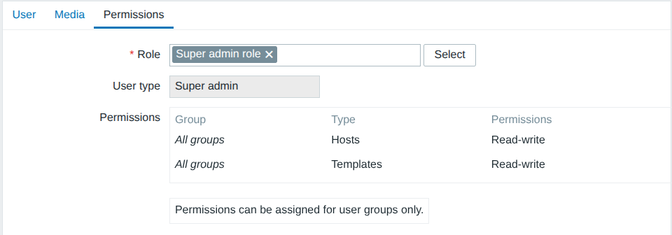
12.2 API user role and user type
Under Users => API tokens press New API token, assign user api. We can uncheck Set expiration date and time, press Add. Copy macro to clipboard.
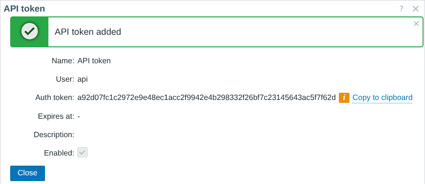
12.3 Add token to user object
Visit Administration => Macros and install macro. To simulate all upcoming chapters much faster, consider running token in plain text.
Token dafa06e74403ca317112cf5ddd3357b2ad2a2c5cb348665f294a53b4058cfbcf
must be placed:
Address https://zabbix.book.the of the frontend server must be used via:
Later throughout chapters, we will use a reference on the API endpoint in a format of:
Now we can take new 2 variables and install globally:
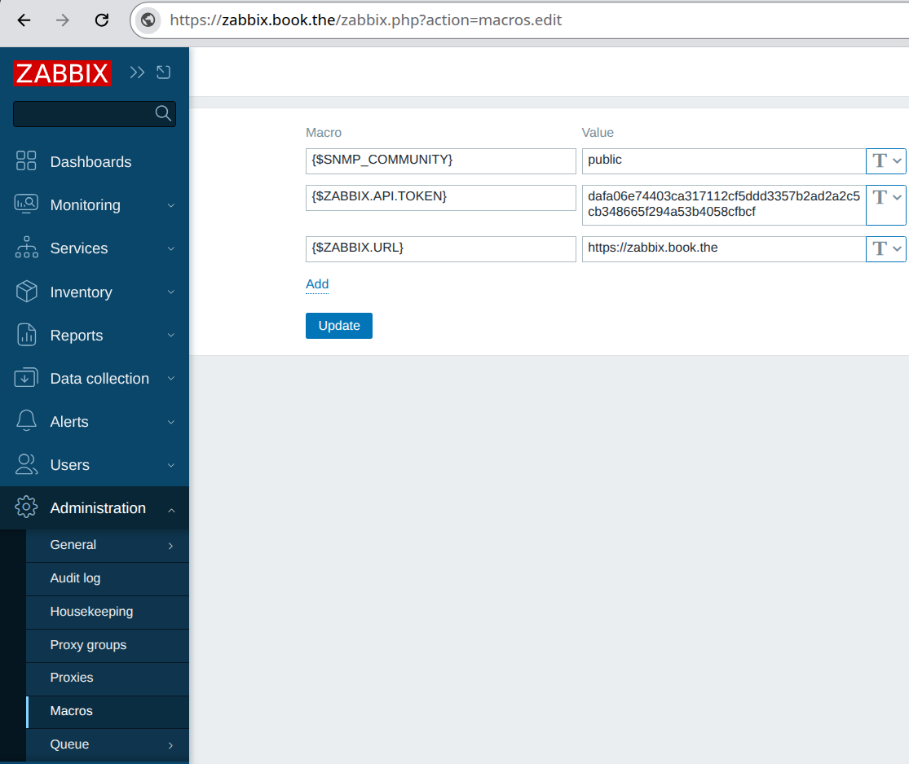
12.4 User macros
First API call
If you feel new to Zabbix API, try this curl example from Zabbix frontend server.
Set bash variables:
ZABBIX_API_TOKEN="dafa06e74403ca317112cf5ddd3357b2ad2a2c5cb348665f294a53b4058cfbcf"
ZABBIX_URL="https://zabbix.book.the/api_jsonrpc.php"
This snippet is tested and compatible with version 7.0/7.4:
curl --insecure --request POST \
--header 'Content-Type: application/json-rpc' \
--header 'Authorization: Bearer '$ZABBIX_API_TOKEN \
--data '{"jsonrpc":"2.0","method":"proxy.get","params":{"output":["name"]},"id":1}' \
$ZABBIX_URL
Setting Bearer token in header is available and recommended since 7.0.
Setting a static token is available since 6.0. In version 6.0, the token is not in header, but inside JSON body like this:
curl --insecure --request POST \
--header 'Content-Type: application/json-rpc' \
--data '{"jsonrpc":"2.0","method":"proxy.get","params":{"output":["host"]},"auth":"'"$ZABBIX_API_TOKEN"'","id":1}' \
$ZABBIX_URL
Host group membership (HTTP agent)
Use case
Every time an email arrives user would love to see all host groups the host belongs.
Implementation
Use {HOST.HOST} as an input for the "host.get" API method and find out about host group membership. Format reply in one line, store it in inventory.
An item type "HTTP agent" is fastest way to run a single Zabbix API call and retrieve back result. This is possible since Zabbix 6.0 where configuring a static session token becomes possible. An upcoming solution is tested and works on version 7.0/7.4
Create new HTTP agent item
| Field | Value |
|---|---|
| Item name | host.get |
| Type | HTTP agent |
| Key | host.get |
| Type of information | Text |
| URL | {$ZABBIX.URL}/api_jsonrpc.php |
| Request type | POST |
| Request body type | JSON data |
| Update interval | 1d |
| Populates host inventory field | Site rack location |
Request body:
{
"jsonrpc": "2.0",
"method": "host.get",
"params": {
"output": ["hostgroups"],
"selectHostGroups": "extend",
"filter": {"host":["{HOST.HOST}"]}
},
"id": 1
}
Headers
| Field | Value |
|---|---|
| Authorization | Bearer {$ZABBIX.API.TOKEN} |
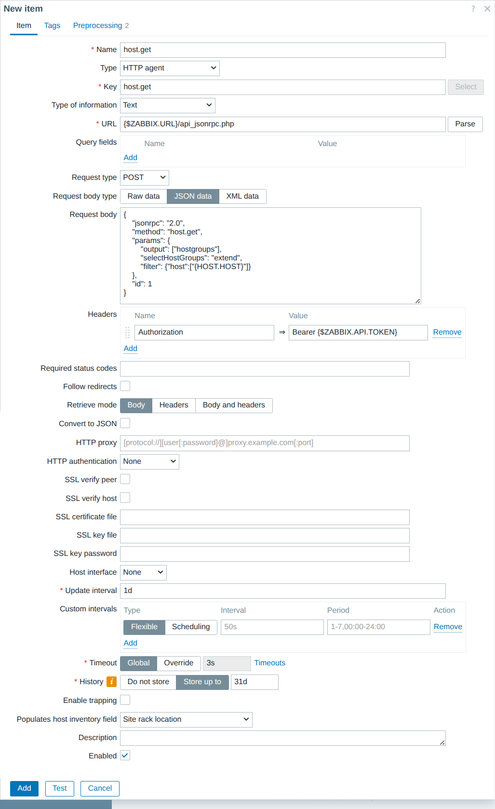
12.5 Host get method via HTTP agent item
Preprocessing steps
| Name | Parameters |
|---|---|
| JSONPath | $.result[0].hostgroups[*].name |
| JavaScript | return JSON.parse(value).join(','); |
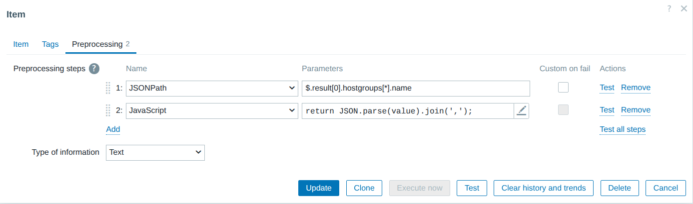
12.6 Preprocessing
Last step is to store the outcome in the inventory. Scroll down to the bottom of HTTP agent item and select an inventory field for example "Site rack location".
To access suggested inventory field, we must use:
To include extra information inside the message template follow this lead:
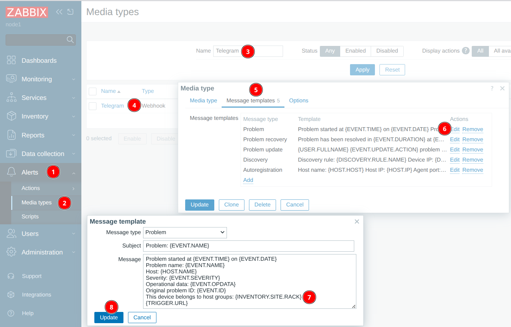
12.7 Inventory fields in media type
Warning
If data collection is done by Zabbix proxy, it is possible the proxy
is incapable to reach Zabbix frontend server due to limitation in firewall.
Use curl -kL "https://zabbix.book.the" to test!
Auto close problem (Webhook)
Use case
Due to reason of not being able to find a recovery expression for a trigger, need to close the event automatically after certain time.
Implementation
Trigger settings must support Allow manual close. On trigger which needs
to be auto closed there must be a tag auto with a value close.
An action will invoke a webhook which will use Zabbix API to close event.
To implement, visit Alerts => Scripts, press Create script
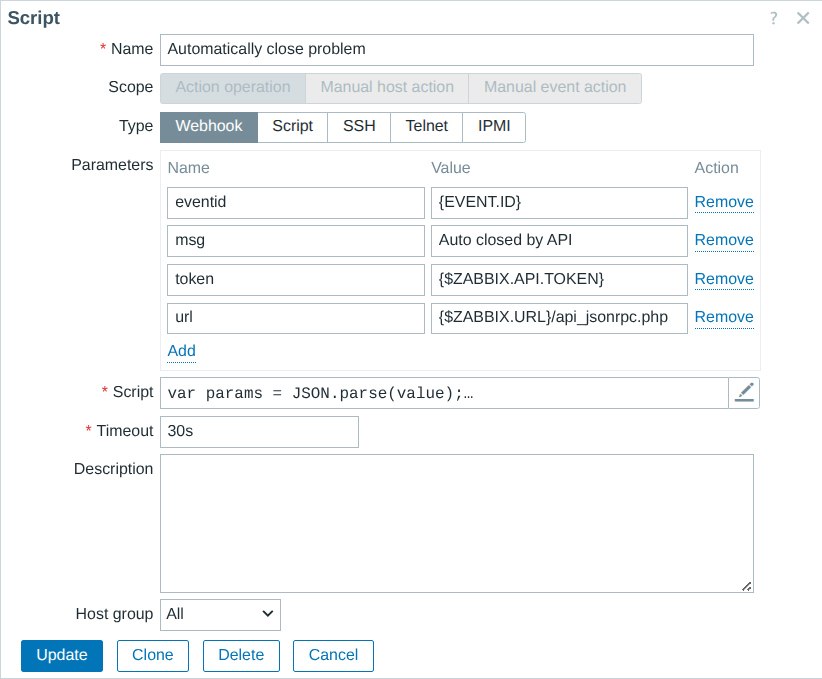
12.13 Auto close problem
| Field | Value |
|---|---|
| Name | Automatically close problem |
| Scope | Action operation |
| Type | Webhook |
Parameters:
| Field | Value |
|---|---|
| eventid | {EVENT.ID} |
| msg | Auto closed by API |
| token | {$ZABBIX.API.TOKEN} |
| url | {$ZABBIX.URL}/api_jsonrpc.php |
Script:
var params = JSON.parse(value);
var request = new HttpRequest();
request.addHeader('Content-Type: application/json');
request.addHeader('Authorization: Bearer ' + params.token);
var eventAcknowledge = JSON.parse(request.post(params.url,
'{"jsonrpc":"2.0","method":"event.acknowledge","params":{"eventids":"'+params.eventid+'","action":1,"message":"'+params.msg+'"},"id":1}'
));
return JSON.stringify(eventAcknowledge);
For the triggers which need to be closed automatically, we need to:
1) Set Allow manual close checkbox ON
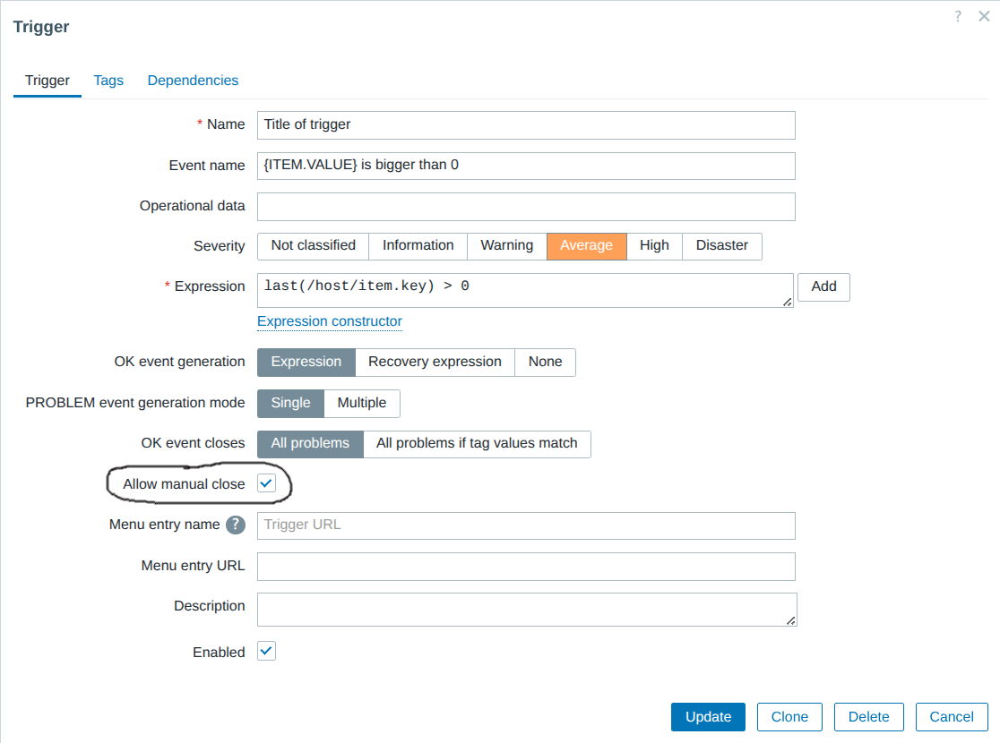
12.8 Allow manual close
2) Install tag auto with value close
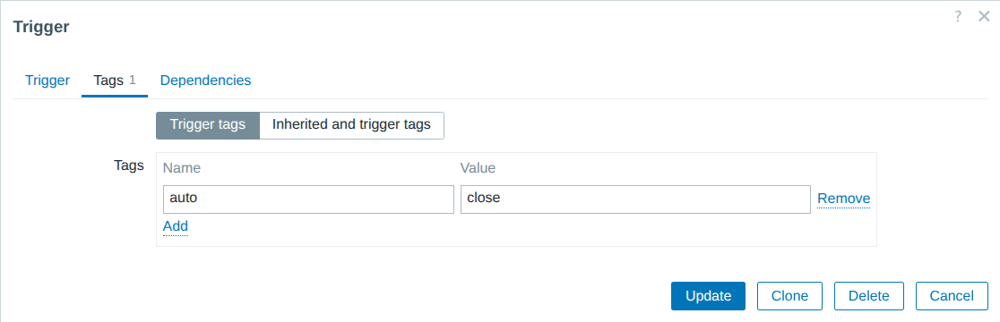
12.9 Trigger tags
Go to Alerts => Actions => Trigger actions
Create an action which will be targetable
by using tag name auto with a tag value close.
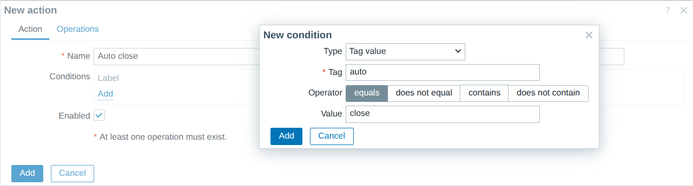
12.10 Conditions for action
It's important to not create operation step 1, but start operation with step 2:
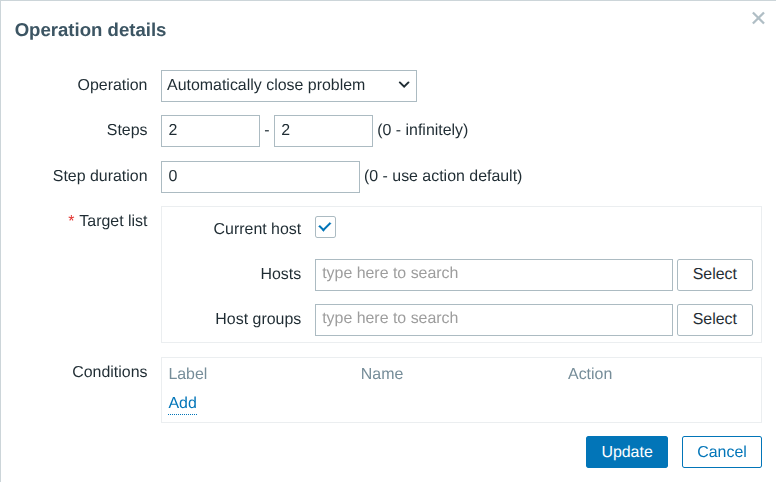
12.11 A delayed operation
The Default operation step duration field will serve the purpose to tell how long the event will be in problem state.
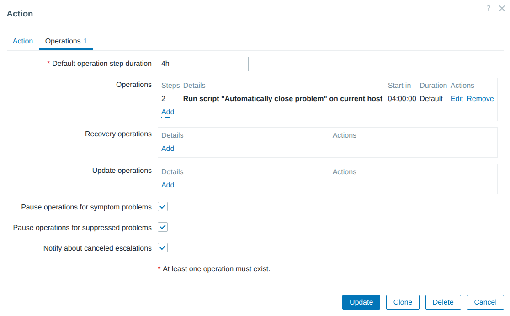
12.12 Close event later
This solution has been tested with 7.0/7.4
Self destructive host (Webhook)
Use case
On a big infrastructure with thousands of devices there is no human who can track which devices are deprovisioned. Need to automatically remove unhealthy devices.
Implementation
Problem events such as "Zabbix agent is not available" or "No SNMP data collection" sitting too long in problem state will invoke a webhook to delete the host.
To implement, visit Alerts => Scripts, press Create script
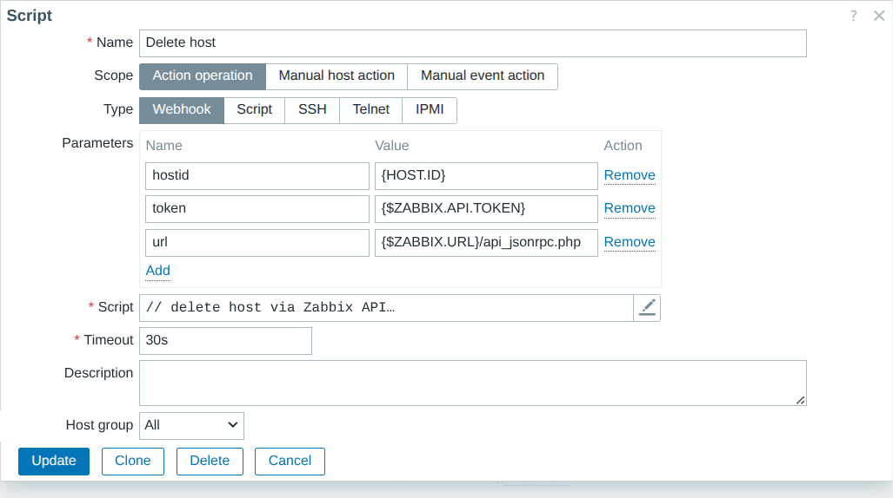
12.13 Auto close problem
| Field | Value |
|---|---|
| Name | Delete host |
| Scope | Action operation |
| Type | Webhook |
Parameters:
| Field | Value |
|---|---|
| hostid | {HOST.ID} |
| token | {$ZABBIX.API.TOKEN} |
| url | {$ZABBIX.URL}/api_jsonrpc.php |
Script:
// delete host via Zabbix API
var params = JSON.parse(value);
var request = new HttpRequest();
request.addHeader('Content-Type: application/json');
request.addHeader('Authorization: Bearer ' + params.token);
var hostDelete = JSON.parse(request.post(params.url,
'{"jsonrpc":"2.0","method":"host.delete","params":['+params.hostid+'],"id":1}'
));
return JSON.stringify(hostDelete);
To setup action, the trigger must running a tag delete with value host.
The conditions can be to target tag plus value and trigger severity:
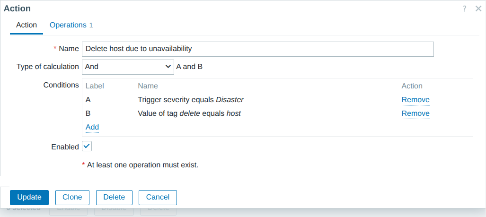
12.15 Delete host target tag and tag value
Here we are running a delayed action with a step number 31. Because default duration is 1d, the host will be deleted after 30 days.
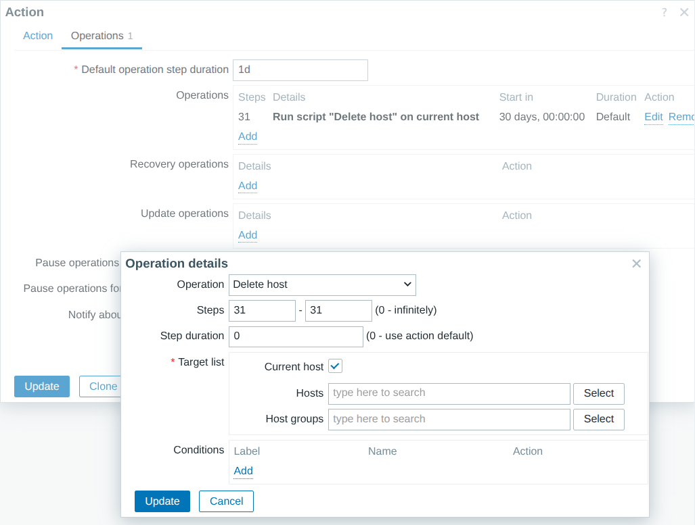
12.16 Delete host operations
Replace host Visible name (Script item)
Use case
Replace host "Visible name" with a name which is already stored in inventory
Implementation
The "Script" item, will read metadata for all hosts. Will read the Name field stored inside inventory and compare with current Visible name of host. If inventory field is empty, the visible field will not be replaced.
This is maximum efficiency to run a single API call once per day. If nothing needs to be done, "host.update" API calls will not be wasted. No SQL UPDATE operations for the Zabbix database :)
Go to Data collection => Hosts => press Create host
| Field | Value |
|---|---|
| Host name | Update host Visible name |
| Host groups | Daily Zabbix API calls |
Go to Items and press Create item
| Field | Value |
|---|---|
| Name | Visible name |
| Type | Script |
| Key | visible.name |
| Type of information | Text |
| Update interval | 1d |
Parameters:
| Field | Value |
|---|---|
| token | {$ZABBIX.API.TOKEN} |
| url | {$ZABBIX.URL}/api_jsonrpc.php |
Script:
// load all parameters in memory
var params = JSON.parse(value);
// new API call
var request = new HttpRequest();
request.addHeader('Content-Type: application/json');
request.addHeader('Authorization: Bearer ' + params.token);
// obtain Bare minimum fields: host "Visible name" and inventory "Name"
var hostData = JSON.parse(request.post(params.url,
'{"jsonrpc":"2.0","method":"host.get","params":{"output":["hostid","inventory","name","host"],"selectInventory":["name"]},"id":1}'
)).result;
var listOfErrors = [];
var listOfSuccess = [];
// iterate through host list
for (var h = 0; h < hostData.length; h++) {
// validate if inventory "name" element exists
if (typeof hostData[h].inventory.name !== 'undefined') {
// if "name" field is not empty
if (hostData[h].inventory.name.length > 0) {
// compare if inventory name is not the same as host visible name
if (hostData[h].inventory.name !== hostData[h].name) {
Zabbix.Log(params.debug, 'Host visible name field, host: ' + hostData[h].name + ' need to reinstall visible name');
// formulate payload for easy printing for troubleshoting
payload = '{"jsonrpc":"2.0","method":"host.update","params":' + JSON.stringify({
'hostid':hostData[h].hostid,
'name':hostData[h].inventory.name
}) + ',"id":1}';
Zabbix.Log(params.debug, 'Host visible name field, payload: ' + payload);
try {
hostUpdate = JSON.parse(request.post(params.url, payload));
// save API errors, like name already exists:
if (typeof hostUpdate.error !== 'undefined') { listOfErrors.push({'error':hostUpdate.error,'origin':hostData[h].host}) }
// save successfull operation:
if (typeof hostUpdate.result !== 'undefined') { listOfSuccess.push(hostUpdate.result) }
}
catch (error) {
throw 'noo';
}
}
}
}
}
return JSON.stringify({ 'listOfSuccess': listOfSuccess, 'errors': listOfErrors });
Warning
The chances of having duplicate host names are still possible. In this case, the script will continue to parse all hosts and will retry update operation. Ensure $.listOfErrors in output is an empty list.
All together
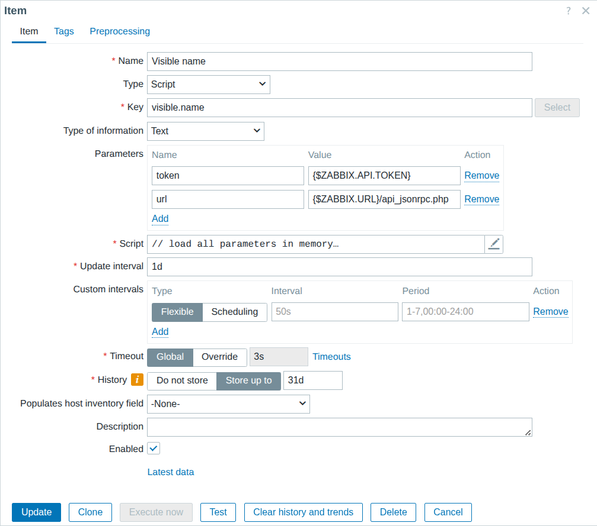
12.17 Script item, host Visible name
The item will be sit at host level and serve a purpose of cronjob
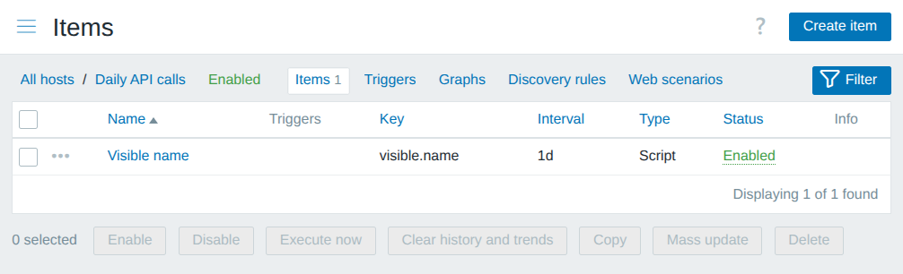
12.18 Script item ready
This is tested and works with Zabbix 7.0
Cleanup unused ZBX interfaces (Webhook)
Use case 1
Default "Host availability" widget will print "Unknown" interfaces if none of Zabbix agent passive checks are using it. Need to remove interface to get "Unknown" interface number closer to 0
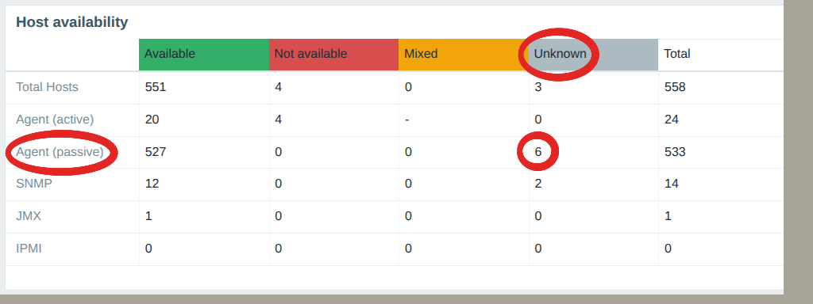
12.19 Unknown ZBX passive interfaces
Use case 2
Active checks by design do not require an interface. Having a defined interface will mislead the team to understand how active checks actually works.
Use case 3
https://cloud.zabbix.com/ is good for server monitoring with active checks. While registering new servers, the IP address of host interface is not relatable to infrastructure. Remove the interface to make setup look more clean.
Implementation
To bring aboard a host, run a webhook to validate if an interface is used by any passive Zabbix agent items. If it's not used, then remove interface.
To implement, visit Alerts => Scripts, press Create script
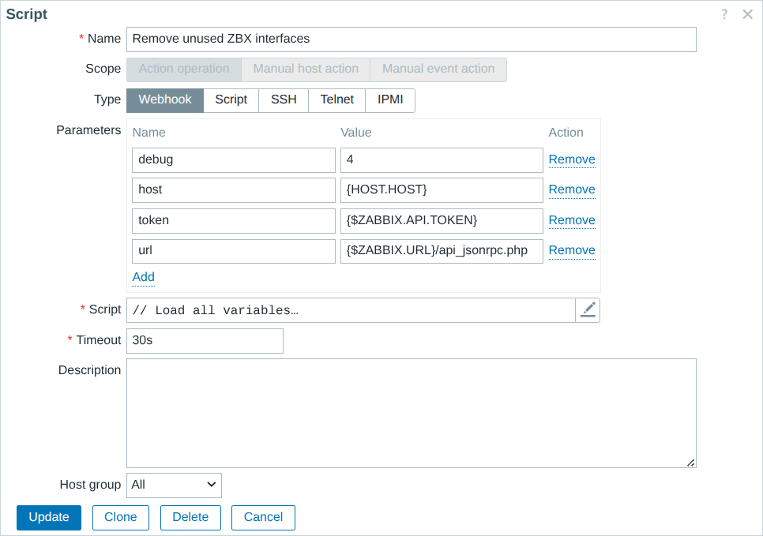
12.20 Remove unused ZBX interfaces
Webhook
| Field | Value |
|---|---|
| Name | Remove unused ZBX interfaces |
| Scope | Action operation |
| Type | Webhook |
Parameters:
| Field | Value |
|---|---|
| debug | 4 |
| host | {HOST.HOST} |
| token | {$ZABBIX.API.TOKEN} |
| url | {$ZABBIX.URL}/api_jsonrpc.php |
Script:
// Load all variables
var params = JSON.parse(value);
var request = new HttpRequest();
request.addHeader('Content-Type: application/json');
request.addHeader('Authorization: Bearer ' + params.token);
// Pick up hostid
var hostid = JSON.parse(request.post(params.url,
'{"jsonrpc":"2.0","method":"host.get","params":{"output":["hostid"],"filter":{"host":["' + params.host + '"]}},"id":1}'
)).result[0].hostid;
// Extract all passive Zabbix agent interfaces
var allAgentInterfaces = JSON.parse(request.post(params.url,
'{"jsonrpc":"2.0","method":"hostinterface.get","params":{"output":["interfaceid","main"],"filter":{"type":"1"},"hostids":"' + hostid + '"},"id":1}'
)).result;
// If any ZBX interface was found then proceed fetching all items because need to find out if any items use an interface
if (allAgentInterfaces.length > 0) {
// Fetch all items which are defined at host level and ask which item use passive ZBX agent interface
// Simple check items (like icmpping) also can use zabbix agent interface
var items_with_int = JSON.parse(request.post(params.url,
'{"jsonrpc":"2.0","method":"item.get","params":{"output":["type","interfaces"],"hostids":"' + hostid + '","selectInterfaces":"query"},"id":1}'
)).result;
}
// Define an interface array. This is required if more than one ZBX interface exists on host level
var interfacesInUse = [];
// Iterate through all ZBX interfaces
for (var zbx = 0; zbx < allAgentInterfaces.length; zbx++) {
// Go through all items which is defined at host level
for (var int = 0; int < items_with_int.length; int++) {
// There are many items which does not need interface. Specifically analyze the ones which has an interface defined
if (items_with_int[int].interfaces.length > 0) {
// There is an interface found for the item
if (items_with_int[int].interfaces[0].interfaceid == allAgentInterfaces[zbx].interfaceid) {
// Put this item in list which use an interface
var row = {};
row["itemid"] = items_with_int[int].itemid;
row["interfaceid"] = allAgentInterfaces[zbx].interfaceid;
row["main"] = allAgentInterfaces[zbx].main;
interfacesInUse.push(row);
}
}
}
}
// Final scan to identify if any interface is wasted
var needToDelete = 1;
var evidenceOfDeletedInterfaces = [];
var mainNotUsed = 0;
for (var defined = 0; defined < allAgentInterfaces.length; defined++) {
// Scan all items
needToDelete = 1;
for (var used = 0; used < interfacesInUse.length; used++) {
if (allAgentInterfaces[defined].interfaceid == interfacesInUse[used].interfaceid) {
needToDelete = 0;
}
}
// If flag was not turned off, then no items with this interface were found. No items are using this interface. Safe to delete
// Delete all slaves first
if (needToDelete == 1 && allAgentInterfaces[defined].main == 0) {
var deleteInt = JSON.parse(request.post(params.url,
'{"jsonrpc":"2.0","method":"hostinterface.delete","params":["' + allAgentInterfaces[defined].interfaceid + '"],"id":1}'
));
var row = {};
row["deleted"] = deleteInt;
evidenceOfDeletedInterfaces.push(row);
}
if (needToDelete == 1 && allAgentInterfaces[defined].main == 1) {
var mainNotUsed = allAgentInterfaces[defined].interfaceid;
}
}
// Delete main interface at the end
if (mainNotUsed > 0) {
var deleteInt = JSON.parse(request.post(params.url,
'{"jsonrpc":"2.0","method":"hostinterface.delete","params":["' + mainNotUsed + '"],"id":1}'
));
var row = {};
row["deleted"] = deleteInt;
evidenceOfDeletedInterfaces.push(row);
}
var output = JSON.stringify({
"allAgentInterfaces": allAgentInterfaces,
"interfacesInUse": interfacesInUse,
"evidenceOfDeletedInterfaces": evidenceOfDeletedInterfaces
});
Zabbix.Log(params.debug, 'Auto remove unused ZBX agent passive interfaces: ' + output)
return 0;
To make webhook in action visit Alerts => Actions => Autoregistration actions. Press Create action. For example to auto register Linux servers, we can target a pattern ".lnx" inside the hostname.
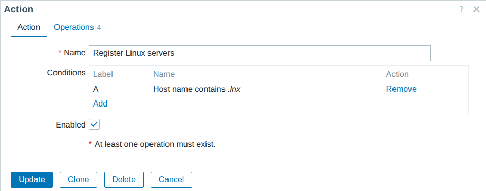
12.21 Conditions for ZBX active checks
The operations will use newly made webhook
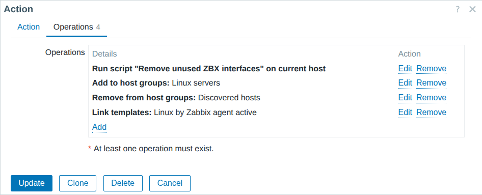
12.22 Operations of Zabbix agent autoregistration
The complete picture is
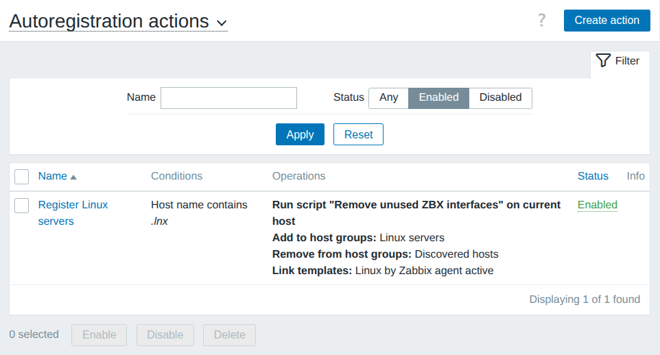
12.23 Zabbix agent autoregistration completed
Read log file from YYYY.MM.DD filename (Script)
Use case
Requirement is to read a filename with today's pattern YYYY.MM.DD or YYYY_MM_DD or YYYYMMDD.
Popular solution 1 - logrt
Using "logrt" item key can be used to cover use case. However in case hundreds of files in directory, the CPU will have impact.
Popular solution 2 - LLD rule
We Zabbix LLD rule to find the files in directory. This method do not allow to store all data inside same itemid. When files are deleted from server, the items in Zabbix will get unsupported.
Alternative solution
We will use Zabbix API to create a global variables YYYY, MM, DD. Those will be universally available by any host, template. The "cronjob host" will run at least once per day and reinstall the date right after the midnight. Inside template level there will be a single/static item key which will be able to read today's log.
Go to Data collection => Hosts => press Create host
| Field | Value |
|---|---|
| Host name | Dude |
| Host groups | Cronjob |
Go to Items and press Create item
| Field | Value |
|---|---|
| Name | Create or update global macro |
| Type | Script |
| Key | create.or.update.global.macro |
| Type of information | Text |
| Update interval | 0 |
| Custom intervals: Scheduling | h0m1s1 |
Parameters:
| Field | Value |
|---|---|
| 1_year | {$DATE:arg1.year} |
| 2_month | {$DATE:arg2.month} |
| 3_day | {$DATE:arg3.day} |
| 4_hour | {$DATE:arg4.hour} |
| 5_minute | {$DATE:arg5.minute} |
| 6_second | {$DATE:arg6.seconds} |
| token | {$ZABBIX.API.TOKEN} |
| url | {$ZABBIX.URL}/api_jsonrpc.php |
The script to create and maintain global variables:
// load all variables into memory
var params = JSON.parse(value),
now = new Date();
// function to always print seconds, minutes, hours as 2 digits, even it its a 1 digit character
function padLeft(value, length, char) {
value = String(value);
while (value.length < length) {
value = char + value;
}
return value;
}
// define macros to check/create without '{$' an '}'
var macrosToCheck = [
'DATE:arg1.year',
'DATE:arg2.month',
'DATE:arg3.day',
'DATE:arg4.hour',
'DATE:arg5.minute',
'DATE:arg6.seconds'
];
// prepare values for replacement. order is important
var valuesToInsert = [
now.getFullYear().toString(),
padLeft(now.getMonth() + 1, 2, '0'),
padLeft(now.getDate(), 2, '0'),
padLeft(now.getHours(), 2, '0'),
padLeft(now.getMinutes(), 2, '0'),
padLeft(now.getSeconds(), 2, '0')
];
var request = new HttpRequest();
request.addHeader('Content-Type: application/json');
request.addHeader('Authorization: Bearer ' + params.token);
var allGlobalMacrosBefore = JSON.parse(request.post(params.url,
'{"jsonrpc":"2.0","method":"usermacro.get","params":{"output":["globalmacroid","macro","value"],"globalmacro":true},"id":1}'
)).result;
// prepare much compact array which holds only necessary values
var target = [];
for (var a = 0; a < allGlobalMacrosBefore.length; a++) {
for (var b = 0; b < macrosToCheck.length; b++) {
Zabbix.Log(4, 'macro update compare: ' + allGlobalMacrosBefore[a].macro + ' with ' + '{$' + macrosToCheck[b] + '}');
if (allGlobalMacrosBefore[a].macro === '{$' + macrosToCheck[b] + '}') {
Zabbix.Log(4, 'macro update: ' + allGlobalMacrosBefore[a].macro + ' === ' + '{$' + macrosToCheck[b] + '}');
target.push(allGlobalMacrosBefore[a]);
}
}
}
// check if the amount of macros to maintain match existing macro. this portion will execute if run template for the first time
var macroExists = 0;
var allCreateOperation = [];
if (macrosToCheck.length !== target.length) {
// something is missing, need to find what. open every macro which is known by Zabbix
for (var b = 0; b < macrosToCheck.length; b++) {
// reset the counter, so far macro has not been found
macroExists = 0;
for (var a = 0; a < target.length; a++) {
Zabbix.Log(3, 'look for missing macro update: ' + target[a].macro + ' VS {$' + macrosToCheck[b] + '}');
if (target[a].macro === '{$' + macrosToCheck[b] + '}') {
macroExists = 1;
break;
}
}
// if the list was completed and macro was not found then create a new
if (macroExists !== 1) {
var createNew = JSON.parse(request.post(params.url,
'{"jsonrpc":"2.0","method":"usermacro.createglobal","params":{"macro":"' + '{$' + macrosToCheck[b] + '}' + '","value":"' + valuesToInsert[b] + '"},"id":1}'
));
allCreateOperation.push(createNew);
}
}
}
// prepare payload what needs to be updated
var dataForUpdate = [];
for (var m = 0; m < target.length; m++) {
// iterate through importand macro names
for (var n = 0; n < macrosToCheck.length; n++) {
// compare the macro name
if (target[m].macro === '{$' + macrosToCheck[n] + '}') {
// if value is not correct at the moment
Zabbix.Log(4, 'about to macro update: ' + target[m].value + ' VS ' + valuesToInsert[n]);
if (Number(target[m].value) !== Number(valuesToInsert[n])) {
var row = {}
row["globalmacroid"] = target[m].globalmacroid;
row["value"] = valuesToInsert[n];
dataForUpdate.push(row);
}
}
}
}
Zabbix.Log(4, 'about to macro update: ' + JSON.stringify(dataForUpdate));
// if there is anything to update (usually seconds has been changed)
if (dataForUpdate.length > 0) {
var allUpdateOperations = JSON.parse(request.post(params.url,
'{"jsonrpc":"2.0","method":"usermacro.updateglobal","params":'+ JSON.stringify(dataForUpdate) +',"id":1}'
));
}
// output
return JSON.stringify({
'allCreateOperation': allCreateOperation,
'allUpdateOperations': allUpdateOperations
})
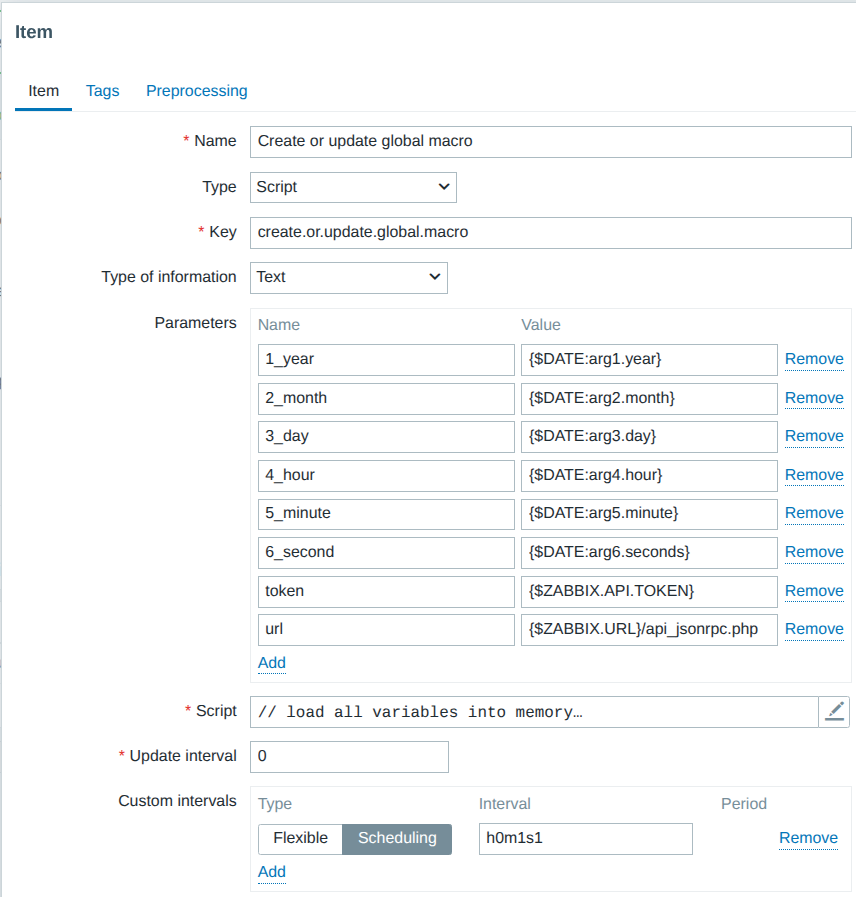
12.24 Create or reinstall global macros
After running a script now, there are global variables available:
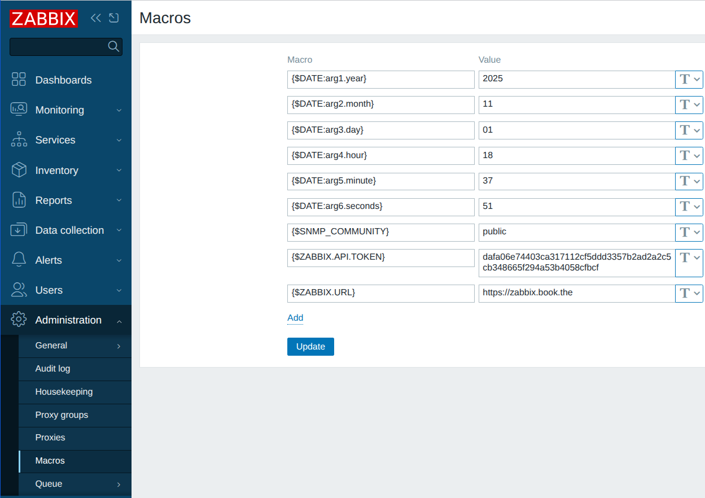
12.24 Global YYYY, MM, DD macros
For log item monitoring we can use native log item key:
In case need to analyze a single summary where file size is less than 16 MB, then can use: